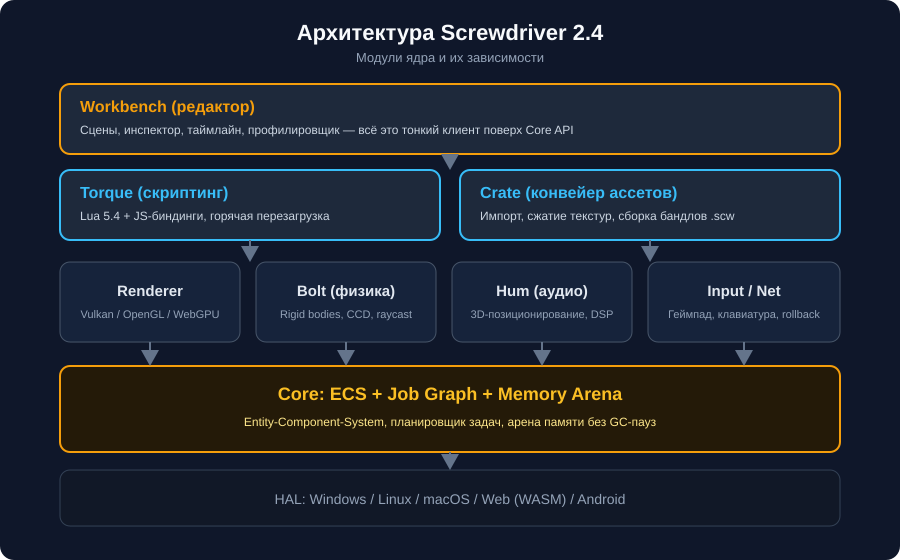
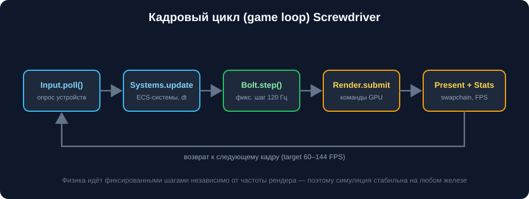

О движке и о сайте
Screwdriver начался в 2021 году как учебный рендерер, а сегодня это полноценный открытый движок, который используют инди-команды и преподаватели.
Коротко о проекте
| Параметр | Значение |
|---|---|
| Версия | 2.4 «Hexhead» |
| Язык ядра | C++17, скрипты — Lua 5.4 / JavaScript |
| Платформы | Windows, Linux, macOS, Web (WASM), Android |
| Лицензия | MIT (ядро), Apache-2.0 (редактор Workbench) |
| Размер рантайма | ≈ 4.2 МБ без ассетов |
| Целевой FPS | 60–144 (физика фиксированно 120 Гц) |
Архитектура
Движок собран слоями: редактор и скрипты — тонкие клиенты поверх Core API, а Core опирается на аппаратный уровень (HAL).

Модули ядра
| Модуль | Назначение | Потоки |
|---|---|---|
core | ECS, job graph, арена памяти, лог | main + workers |
renderer | Backend-абстракция, кластеризованный свет | render |
bolt | Физика твёрдых тел, broadphase, CCD | physics |
hum | Аудио: 3D-позиционирование, DSP-шины | audio |
torque | VM Lua/JS, биндинги, hot reload | script |
crate | Импорт и сборка ассетов в .scw | io |
Кадровый цикл

Структура репозитория
дерево проектаtext
screwdriver/
├── core/ # ECS, память, планировщик
├── modules/
│ ├── renderer/ # Vulkan / OpenGL / WebGPU
│ ├── bolt/ # физика
│ ├── hum/ # аудио
│ └── torque/ # скрипты
├── editor/ # Workbench
├── tools/crate/ # конвейер ассетов
├── templates/ # шаблоны проектов
└── docs/ # этот сайтОб этом сайте
Документация — статический сайт без серверной части: HTML, CSS и немного JS.
Поиск работает полностью на клиенте по файлу search-index.json,
подсветка кода и интерактивные превью не требуют сети. Благодаря этому сайт
идеально подходит для экспериментов с кэшированием CDN: все ресурсы имеют
стабильные пути и предсказуемые MIME-типы.
Совет
Если читаете оффлайн — весь сайт можно открыть с диска, кроме поиска: ему нужен локальный сервер (python3 -m http.server).